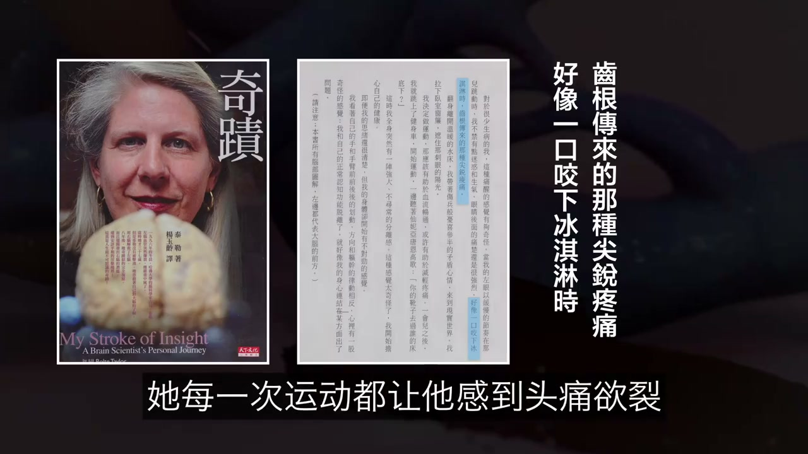
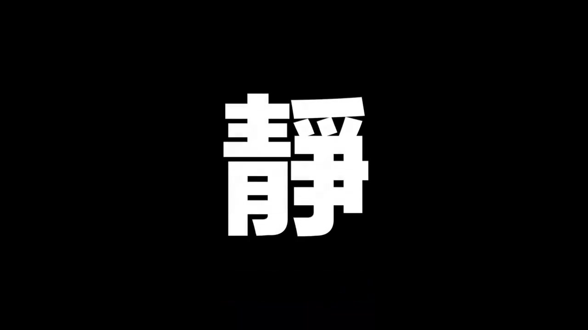
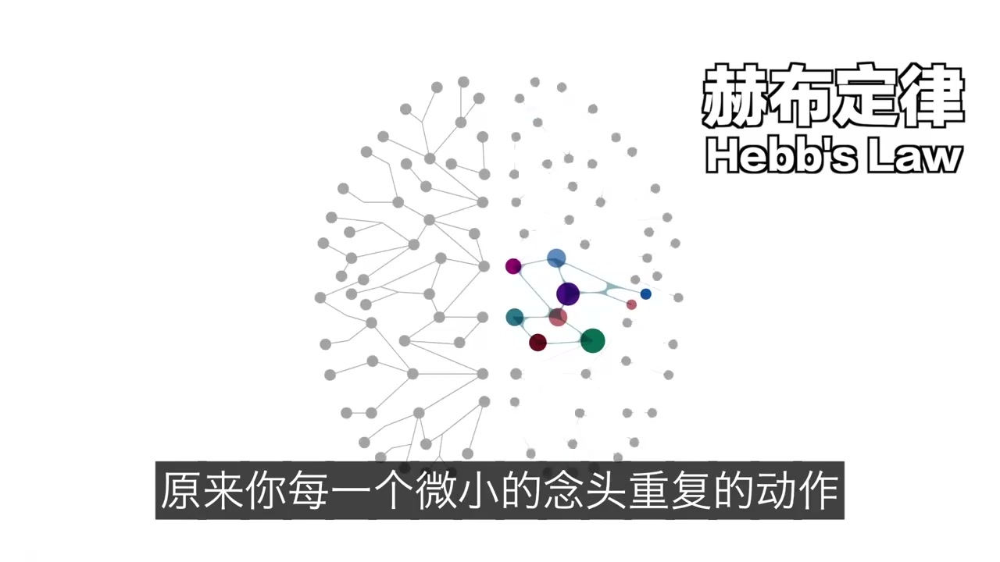
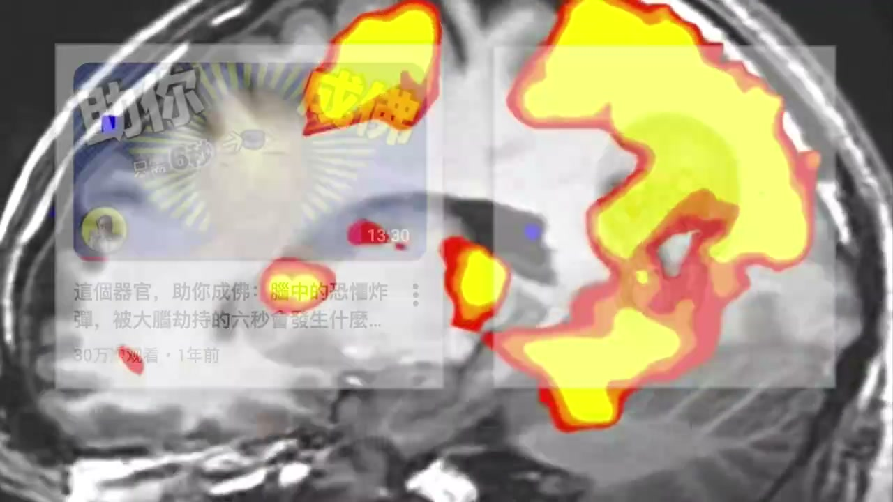
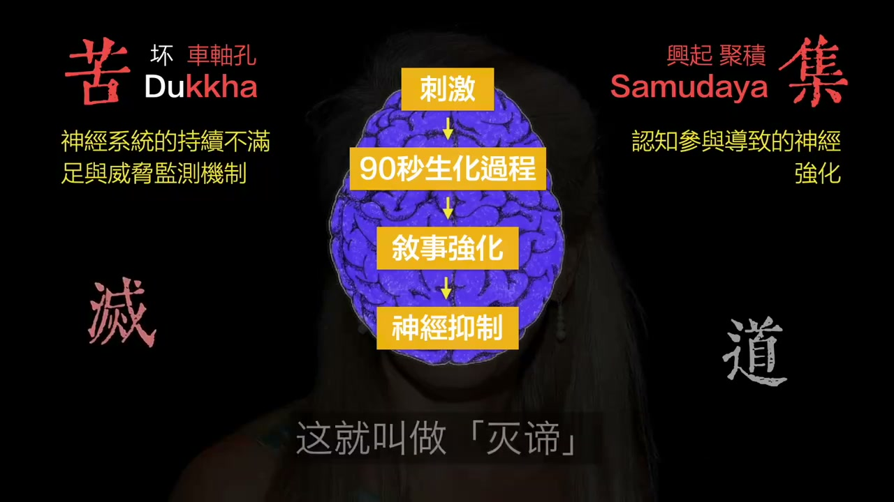
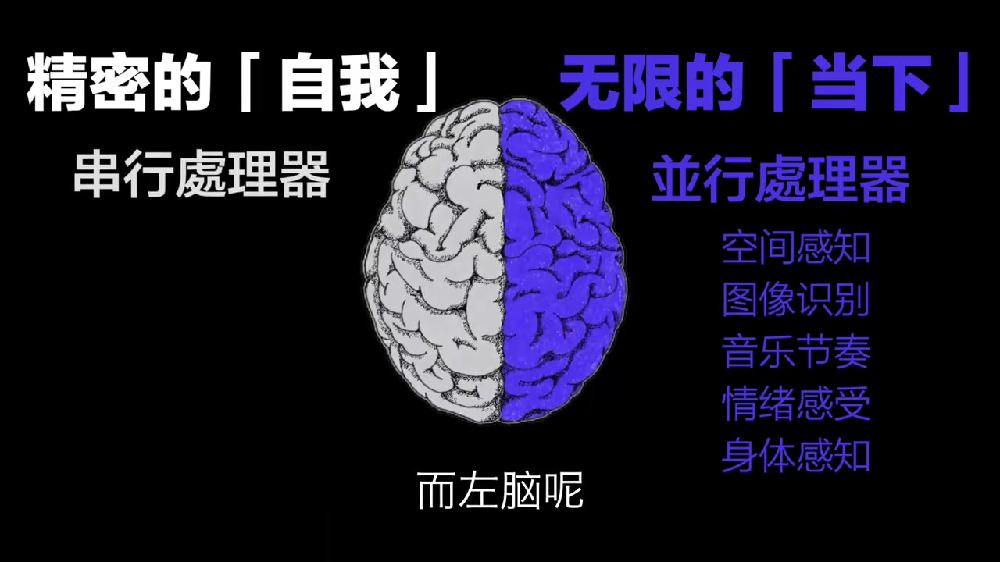

原文转写稿｜大脑不过是一台可重装系统的机器？
只做排版与配图，不改原文一字
说明：本页正文直接使用原始转写稿，不改字、不改句、不做概括、不做重写。
仅增加配图与页面排版，方便直接阅读。

欢迎来到自说之话的种才
有句明言说
大老是宇宙中唯一能研究自己的奇怪
所以你现在听我说话
看见色彩
会不会也只是大老实实渲染的患绝了
不用怀疑答案是肯定的
而且古代哲学家管哲教着番说幼像
而现代科学家哲教堂摩尼撒河
可如果有一天
我们这撒河突然短路了
你将看到什么
曾经有位老科学家
实际上人类历史上最金融的黑客行动
他真的黑近了自己的撒河
并在一场毁灭的独内风暴中
亲眼目睹了我之患灭
我竟然可以像坏掉的插件一样
被诸医卸在
而当火在卓老的赵森中彻底细火
他竟然在幼老的物理层面中
得证了金刚金中最深层的那个代码
敢说幼像
皆为虚望
所以这到底是什么鬼
今天我们就来聊聊这个故事
在1996年那个黑路撒河的命运
轻层到来之前
吉尔泰乐是站在人类医学
亲自塔监的人物
是哈佛老库的顶尖神经解炮学家
监形象大使
而哈佛老库
这是全球大老研究的渗层
吉尔每天的工作
就是穿上白大罐
拿起手术刀
去解炮那些冷凍的大老标本
还要寻找关于自我和意识的物理证据
但他对大老吃你的背后
其实还隐藏这一段数名感的动机
这个动机就是他的哥哥
吉尔泰乐出生于1959年
在美国印第安纳州的一个普通家庭
家里除了父母
还有一个比较大十八个月的哥哥
哥哥是小吉尔集中最秦密的伙伴
但随着连临增长
吉尔慢慢发现
这个世界似乎有两个版本
在他的世界里
玩玩去吃饭睡觉
一切都是有邏輯有刺续的
但在哥哥的世界里
多极并不存在
他哥哥经常会对这空气说话
就像始终有一个
吉尔无法触控到的平行时空一样
那时候吉尔还小
他并不觉得哥哥这是生病了
他只是觉得我一料搞懂
哥哥的世界到底是怎么样的
后来
哥哥在31岁那年被正式确诊为精神分裂症
他发现哥哥眼中的世界是破碎的
面对同一个场景
吉尔感受到的是五后阳光
而哥哥感受到的是末日般的恐惧和威胁
吉尔曾经回忆说
我看着哥哥
我就在想
为什么我的大老人把这些杂乱无章的光波生波
整合成立体的知觉环境
让我觉得这个世界是那么天一无奉且真实
而他的脑子却不行了
为了解开这个迷谈
吉尔专业复杂的神经系统研究微环路
在他眼里
人类的意识不过是全身50万一个细胞的互相协助
和电信号的不断残住
当时的吉尔是一个为务主义者
他相信只要解剖的足够生
就能在显微镜下
拎出那个名叫丁魂的东西
作为神经学家
吉尔很早就听闻过佛陀的名言
繁卓又向皆为虚望
若见猪象飞向
即见如来
但他却觉得
这不过是虚无的东方哲学
他信奉的是像是那些实实在在的神经线位
是那些可备测量的电话学信号
但命运从不讲逻辑
就在这位脑科学家寻找真相时
他却完全不知道
自己患有先天性动静卖机型
简单来说
就是他的卓老生出有一团血管
像杂乱的麻线一样
正常人的高压动卖水
在这里会经过毛细血管的缓冲
但在他这团机型的血管力了
却直接的冲进了脆弱的浸漫
年轻是没问题
可一半人体摔脑
这就可能随时爆炸
而他要炸回的地方
卓老
这是人类的语言逻辑时间感知
和自我中心的所在地
另一侧的幼老
这是感官河城飞原交流
以及让我们体验世界的更神秘敌感
幼老没有过去和未来的区别
他所有的算力都被说实在当下
而卓老没有当下
只是在55克的存在与自我当中
如果按佛家的说法
假我再卓老
而真我
我再幼老
科学家们人测量的也更多都是卓老
但其二当时并不在意这些
什么真我我假我当下
他每天都在崇拜着卓老的逻辑
这是他因意为澳的科学理性
然而他的大佬却已经开始渗水了
1996年12月10日清晨
维持了37年的水管爆裂了
当吉尔和网长一样起床时
他突然感觉着眼后方
传来一种尖锐的刺痛
当时的感觉就像咬了一口冰淇淋一样
可接下来的5分钟
他每次运动都让他感到头痛运历
同时他脑海里的砸音全部消失了
光线如着热的红流一般融入失业
吉尔看到自己的手
此刻变成了末生的主法资
言而彼此身
这无感当中的一切都开始丢去震动模糊光化
他后来回忆说
我看着我的手
发现我不再是一个独立的个体
我沉了一个正在参动的模糊的能量点
嘴世界最顶尖的脑科学家
其而很快意识了这不是没睡好
而是我的卓老正在下线
早晏时针意味着听觉屁层的丢失
光铭暗意味着视觉去存在问题
他想观察严重病例一样
记录下来了这些所有变化
但他亦得也不害怕
反倒感受到了大欢喜
为什么
因为初学的部位
精准地摧毁了他的OAA
定向一点诺区
他让你感知自我与存在
具体的功能就是整合无感
让你明白
我在这里结束
坏重那你开始
这个区域丢失后会怎么样
吉尔之前为人知道
因为所有丢失他的人
全都不存在了
无法说话无法交流
万如植物一般
但吉尔却用最后一点点残纯的卓老
抵制意识的
这些感受到的这一切
是最宝贵的实验数据
同时这也是遭闻到稀可死的必然
他感到自由身体正在和宇宙容为一体
他感到的是我就是强强就是我
我突然感觉到世界如此的完美
我不再是肉体的求徒
我承担这股灯亮汪洋中的一部分
那种临尽让我感到无比的思个词
咱等年金中有一种描述叫做对手优弦
就是说当一个修行者通过冥想
关闭了赶观砸印
进入一种极勤临尽
极其空引的状态是了
他会感觉自己已经成佛了
已经解脱了
但佛陀这句话还有后半句
对手优弦有为发辰分别隐私
原来佛陀也和吉尔填过一样的主劳强制关系吗
为此描述的如此精准
这种临尽其实也只是层
是意识层面的残存幻影
他并不是真正的挣得空性
仍然被妄想所舒服
当时吉尔也同样感觉如此
他的逻辑中心在拼命的尖叫
吉尔快去求救
你重疯了
而你越感觉在誘惑他别走留在这里
这里没有焦虑只有无限的临尽
在生死一线之间
吉尔几十年的训练残存的最后一身理智告诉他
如果你想告诉世人这个秘密
你就得必须从这急乐打开你先爬出来
然后波通那个救命的电话号吗
当吉尔真杂的爬出玉缸更恐怖的真实来了
他好容易摸到一张同事的名片
可他看着那上面的一切数字字母
他却完全不认识
因为被炸毁的卓老本来负责符号化
也就是把特定的比划定义为A
把特定的糊涂定义为9
但卓老下线以后又老接管的事业
又老并不认识什么数字
他只认识由形状和社会所组成的公司logo
吉尔就是靠这个找到了同事的名片
可接下来究竟如何分辨数字
吉尔开启了一场看成瘋狂原始人的挑战
他把名片上的那些奇怪符号
死死了丁柱
你把它复刻进老海里
然后赶紧转过头去
在电话号码盘上
一个个的比对形状
他就想在玩一种极高难度的连年看
在轻情与昏迷的边缘
他强迫着自己记住极乎一模一样的形状
终于经历过45分钟的反复尝时候
他过通了那个号码
他心里平民的主机员
他想说我是吉尔我重疯了快救我
但在同事听来
吉尔确实在不停地汪汪汪汪
就像是金毛狗对着人叫
而与此同时同事的询问
在吉尔老海中也成了
嗚嗚嗚嗚
实努比的那种物业生呐
为怎么会这样
我们不妨再聊一段等眼睛中的故事
其中说
佛头为了电话阿南
挑响了四院的终身佛头问
你听见终身的吗
阿南大听见的
等终身消失
佛头有问
你现在听见了吗
阿南大听不见的
佛头逆马和此阿南道
你错了
消失的是终身那叫深层
他像灰层一样有深有灭
但那个能让你感知
听到深音的文性
却从未消失
如果你真的听不见的
那你又怎么知道
现在没有深音的呢
这就是佛头有关
感官奔知的礼物
是终身自己在深深灭灭
而不是你的听觉在石油食物
你在临尽的时候
明明听到了尽
所以那个能让你
知道现在安静的能力
他一直都在
崇尾离开
是不是有点烧闹
佛家认为寧目他需要修行
但其二却在这场重封里
以物理层面被迫完成的修行
在我们的卓老里
有一个区域叫做维尼克区
他的功能就是把空气的震动
翻一层带有逻辑含义的语言
这是我们人类最强大的造像工具
而此时
吉尔的这个区域贪患呢
结果就是深音的意义消失了
只剩下毫无修饰了物理震动
可这一刻
他感到的不是恐惧
而是同事的深音和窗外的风声水声
在物理层面上偏仍合疑
吉尔发现自己竞云一种极度平静的状态
这种状态吉尔称之为纳纳之地
他后来描述说
我意识到我的卓老原本
像一个傲慢的独裁者
不断地通过语言
给这个世界贴上标签
他告诉我这个东西叫手机
那个东西叫敌人
但现在独裁者死了
我眼中的现实中云度出了他那天衣无奉的
能量流动的真相
这还真不是胡彻
兵器法尼亚达学的安德务博士
对高级残休者进行大牢扫描后发现
当他们进入天人合疑的境界时
他们老带你那个负责重新规划自我去编解的
也就是OAA定向连诺中书了
选流量会突然的爆降
这意味着谁的开悟跌盘三模地
其实不是一种幻觉
它是人类大牢本身具备的一种
并行处理模式
只在绝大多数的时候
我们那个摊南恐惧充满竞争艺术的主老
像一个不停狂教的黄亚外
把这一切本质剧除的品进
都给彻底掩盖了
这是急二终于第一次看清了
他那个坏有精神分裂症的哥哥
或许并不是因为他迷失在的虚幻中
哥哥可能只是像他现在一样
大牢的某个遇望坏了
倒是他直接撞进了一个未经处理的原始能量的世界
当急二再次醒来
他已经躺在了病床上
经过四个小时的搜树
那颗如高尔復求大小的血坏已经切除了
但这时这位曾经定集的神经学家
却像个阴儿一样
他不会说话
忘记了怎么走路
数学和阅读也都忘记了一干玩意儿记
他的大牢就像凶好的硬件
肯里面的软件
那个微信了他三十七年人格
记忆挪记和语言的东西
已经彻底被隔失化了
在关施宁菩萨教导后是误空的精闻
心情中有一句最核心的奥语
色彼空空彼色
色气是空空气是色
普通人理解这句话
可能需要几十年的休息
而急二再那一刻却直接住进了空里
那显然急二折并不是真正的误空
而是遭闻到稀可死
他几乎成了职务人
他无法再反悔我们这个三位的物理世界了
但就在这时了
一位最伟大的程序员登场了
那就是急二的母亲
格拉迪斯 太勒
他打算重新交给急二认知这个世界
他没有用交科书
而是像教导出生的嬰儿一样
交急二如何做起
如何翻身耐心的引导他
一点点把颜色 数字 作飘空间
重新关入了急二的大牢
但这真的可行吗
在急二之前
大约有100多年的时间
科学家们普遍认为神经不可疏
大牢就像急层电路板
如果你补信重封寿伤
那对不起这块板子就费了 没法用了
但其实
加州大学的麦克尔教授
曾经观察实现喉
发现喉滋大牢皮层你有一张地图
哪个神经员对应着哪个时间的触觉
在这地图里轻轻处处
麦克尔于是捉了一个疯狂的实验
他把喉滋的两个手指疯到了一起
如果按照旧观点
那喉滋大牢中的地图是死板的
喉滋永远会感到不是
但其中以后
当他再次扫描喉滋大牢时
他发现原本负责两个手指的两块脑区
竟然融合到了一块
更觉得是
当他把喉滋的手指切开灰富的原状
大牢里的地图竟然也重新分拆各自归位了
这个实验或许皆是了
大牢根本不是只换不修的主板
而是一个可数深掌的花园
如果你每天在某个地方交水
那你的花草就会封掌
如果你长时间不管某地
他就会慌容吗
后来这个猜想被证实了
就叫做赫布丁尼
一起放电的神经员
会点在一起
原来
你每一个微小的电头重复的动作
都在给大牢里的某主神经员通电
同时你每天早上起来先刷手机
这就是再给焦虑回路通电
你每天遇到不爽的事情就破口打骂
这就是再给愤怒回路通电
而且这些神经员还会因为平凡地一起通电
逐渐从一根细线
变成一条八车道的高速公路
这就成了你难以改变的习惯和性格
不是你一直不弱
而是你脑子里的电流一旦产生
会吓一时的顺着那条最宽的马路冲过去
这就是所谓的神经科术系
而吉尔的母亲就是在当时
用这还只是猜测的理论
来帮吉尔一起想黑客一样冲装大牢
前不久
我们聊过另一位进化心理学家
对佛陀苦急灭到四寸地的兜物
她说佛陀虽然强调人生的本质是苦
但这个苦不是你身体的痛苦
而是只一种不满足不圆满的状态
休息的核心就是讨论如何让这台叫做苦的机器停下来
而苦的根源则是我迟
佛陈中有一个故事说
有位比求问国王
什么是车
论字是车吗
走似车吗
车相似车吗
广都说不是
比求说这就对了吗
车只是这些零件处合起来以后
由于功能需要而产生的一个假名
既然也是同样在康复中
就像那个看着满地
车量零件的比求一样
当卓老师徒重建时
她做的第一件事情就是重新建构
那个叫做我的中心店
她不断地把破碎的记忆拼湊起来
似头再次大海
我是旗二
我是哈福博士
我是那个受害者
这种不断维持个体化特殊化的冲动
就是我职
听到这您的可能会觉得
我持就是自私吗
其实没那么简单
在佛学里我职的词员是我家制造者
也就是说我职不是一个固定的东西
他是一个持续性发生的动作
一个不断制造出我这个脸头的行动
在咱们文里行动对应的词正式业
很多人把业响得太宣布了
但在岛科学的视角下
业其实就是鸡牙所说的
神经缘的放电关系
大家想一想
为什么你会习惯性的自卑
为什么看到某个讨厌的人
就会吓一诗的作为
怎么就是你遇到刺激
电流会自动选择那条
最肥的细肚轻露和激恨之路吗
这种自动化的化学反应
在佛家与镜下
就叫做水液流转
而这就是业力对你的控制
于是佛家所谓业力
轻易在鸡牙看来
就是神经回路的优先放电权
当鸡牙在母亲的陪伴下
开始一点点早回卓老功能时
他突然发现那些旧有的性格回路
那些名为季度愤怒判断的神经高速公路
也正在试图重新连接
如果是普通人
我们会顺着这个电流流下去
但鸡牙产生的一个金人的电头
我已经把那个充满纳机的旧系统
给格式化了
为什么我重装新系统
还要让这些痛苦的插件重新回来了
如果不给这条生气的路径供电
那他是不是就会哭了
于是鸡牙完成的人类历史上
最伟大的黑客行动
选择性重装物理效益
在长达八年的康复之路上
鸡牙发现当卓老的那些旧程序试图重启时
他们并不是一股老的回来
而是像临心的插件一样
一个个的梦出来
这是他们其实很脆弱
鸡牙于是动用幼老那种如如不动的执觉
观察这团电流
但不给他们返亏
无顺着他们去思考
那我这股电流就无法完成回路
慢慢的
只要你不给那条既恨的道路通电
那他就会因为缺乏营养而崩溃
而哭卫
这简直是最硬和最邪修的消业方法
你不是在求神败服
而是在用意志力去饿死你的负面生经缘
而且吉亚从中发现了一个主意让普通人
也改名的物理法则90秒
先问大家一个扎心的问题
你有没有过这种经历
某个人在十几年前当中羞辱你
或者某个前任在五年前背叛的你
直到今天
每当你回想起那个画面
你的胸口都会依然发挤
你的血压会依然升高
都恨不得在深夜
你把那个人那点丁出来反复的仇
如果你有这样的经历
那吉亚其实在告诉你
你正在被卓老扎骗
而且已经被骗了十几年
而卓老骗你所用的了
其实就是化学基础的潮席
比如我们聊过性人和控制恐惧
他一旦捕捉到危险的信号
就会立刻越过抵制
命令身体分秘大量的渗上线数和脾致纯
又会心跳加速肌肉均说去夜会流向四肢
进入战斗和逃跑状态
让你愤怒不知让你控制不已
可吉亚却从康复中发现
这股化学潮席重纳相警报到充刷全身
战道被身体彻底分解
整个过程
只能不超过九十秒
这也就意味着没有任何情绪
能自然地在你身体里停留超过两分钟
可问题来了
为什么我们往往会被一个链头说折磨痛苦好几年呢
吉亚说这是卓老李的另一个察见
续持者在刀规
他居然在脑袋的部罗卡区
只有一个花生皮的打小
但非常麻烦
他就像邪迟了整个卓老一样不停地进行这解释
曾经链脑研究的先驱
加扎迪迦提出了一个概念
叫做卓老解释器
他认为卓老人任务不是告诉你真相
而是给发生的一切边造理由
哪怕是下边
当那九十秒的华学潮席出现时
续持者会立刻上线
会盯着那团务火告诉你
我正在生气
是因为这个讲火太混淡了
接着他开始翻舅帐计划报复
而这个编故事的行为却又会重新的触发大佬放电
再次向去年你关于新的华学物质
如此循环一遍又一遍
这也就是说如果你在九十秒之后还在生气
那是因为你手动在脑子里点的那个循环播放的暗流
而这不正对应者佛点中有关业力隐蹬转的低层描述吗
故事分享到这里
吉尔发现这一切不还是佛陀属于的四圣地
苦极灭到吗
这九十秒的生化过程
不就是精准的描述了苦地和极地吗
苦地多卡
这个词的原意很奇怪是坏掉的和车轴孔合在一起
意思是只一辆马车的车轴坏了
导致轮资赚起来极不顺畅
而我们的卓老系统天生就是一个坏掉的轮走
因为他为了让你生存
就必须让你时刻保持警惕
否则你早在非洲大草原上被吃掉了
他会不断地在大牢回怒你制造一种拨插感
那怕你现在有房有车你的大牢依旧会分泌出微量的压力技术
让你觉得还不够
万一出事了怎么办
这是生理上不可避免的
接着极地
极的意思是心情是聚集
而极二的康复实验里
极地也有了生理化的解释
他就是你卓老对那九十秒之后情绪回味
进行的持续续非
也就是你手动可以停止的那个循环播放按钮
佛陀还生说过一个二件之类的故事
他问弟子一个普通人如果被独建涉重了
会感觉到疼吗
弟子说疼然疼了
佛陀接着说
可是普通人在中了一件之后
会立刻朝自己涉除第二件
而这第二件就叫做称心和妄想
第一件是生理的疼
而第二件就是心理的哭
二年一年
哈佛大学的两位心理学家丹迪尔和马修
做了一系列著名的实验
叫做分心的大老师不快乐
他们通过寿绩APP
实时追踪了数千人的状态
发现人类竟然有47%的时间
都在心不在烟
也就是在脑子里不停的回味过去或担忧未来
而国家修行追求的半处烦恼
其实就是学会始终第一件
绝不给自己涉第二件
所以既然我们看透了情绪的底层逻辑
那生活中又应该怎么应用呢
既然的方法十分协修
他说你不妨直接跟你自己的大老开口说话
先是像古青教导孩子一样
真正的对他说
我非常欣赏你们思考和感受情绪的能力
我也看到了你们刚才的表现很出色
但是我对继续思考这些痛苦的念头
已经完全不敢兴趣了
请停止把这些成年舅葬翻出来
如果这种温和的对话不齐作用
他会直接像讯次小狗一样
在空气中恢复着手指
或者双手插腰大声贺指
够了停下来
你可能觉得最遭受的很好笑
这不就是五年外赚中
郭服容类去调节情绪的管理口诀吗
世界如此美业
过去如此棒的
这样不好
但如果你试试你就知道这招好用了
为什么
因为你卓老那个续试者是非常短试呢
他只听了这种强有力的指力
通过这种多违度的指力
吉尔在物理上就组断了神经园之间的二次放电
在多点里这就叫做灭地
而恰好所谓灭
其本意就是指吸
停止吹风
停止给你那生化潮吸
持续风动力的意思
到此为止吉尔得振四圣地中哭及灭前三地
而他接下来又给经常应惯性再次滑入快车道的大佬
开除了一份三项清单
这竟然也和博佛几千年前领悟的第四地
一模一样
三项清单
低想要让大佬终于值得深度思考的科学问题
第二想要让给大佬带来极大愉悦的事情
第三想先大佬当下最想去做
就能带来成就感的消失
这三招在神经科学上被解释为竞争性意志
因为你大佬的血流量和注意力资源是有限的
当你强制让强恶业皮层去处理高难度的逻辑问题时
或者让你的边缘系统去感受愉悦时
那个负责焦虑的电回路就会因为得不到足够的养分
而不得不惜活
而这你再看看是不是就是佛陀所谓四圣地的最后一环
到底的科学解释
到在凡文中的原意是道路
它不是一个口号
而是一套为了达到心灭痛苦而进行的食草训练
吉亚的那张清单
其实就是佛法中把正道的科学版
尤其是其中两个关键环节 正经济和正练
有一个佛脸故事说
佛有一个叫做二十亿的弟子
就行非常努力
但总是不开悟 奇得像环熟
佛陀就问他
你出生前擅长调情吗
他说擅长啊
佛陀又问
那如果情嫌纳得太紧 能谈出声音吗
他打不行 显会断
佛陀问
那如果情嫌太凶呢
他说那根本发不出来声音
佛陀告诉他
修行就像谈情
你要学会精准地调整那个张力
当欲望太强时
你要调充他
当意志力太弱时 你要调兴他
吉尔的三项清单
就是他在大老黑客行动中
找到的调情搬走
佛陀贪心重的人要修不见关
参心重的人要修慈悲关
只跟吉尔用喜悦的事情
去对冲愤怒的回怒
完全是一个逻辑啊
而且吉尔这套三项清单真正的威力
不仅在云人解决当下的不开心
更在于他是一场打规模的物理消业工程
因为业你就是神经回怒的放电关系
如果你在90秒内
强行把愤怒贪难的电信号
引流到科学问题
和喜悦事情这两条路上
你就完成了一次神经绕心
这就是黑客的改民
而命就是你的神经网络的布局
改命也就是重心不限
故事分享到这呢
我感到最可怕的问题来了
那就是佛陀在几千年前是怎么知道这一切的
原来
美国心理学家
普宁资论大学的教授朱立安
曾经提出了一个惊人的假设
那就是在三千年以前
古人的心气与大佬结构和我们不一样
他们的左右脑并不联通
而是以一种类似
左右脑分泌的烈脑状态在运行
或许他们根本就能听到自己的左脑再说话
所以这会不会就是佛陀摩西脑子
等等先前在当时集体绝务的秘密
具体故事
我们后面再做一期细说
总之这个理论的提出也与吉尔的研究有关
而且这个理论很可能更进一步
为我们展示了吉尔八连康复结束后
传回给我们那个遭稳到的真相
我们眼中的这个世界
从来就不是它本来的样子
2008年
俊尼重封整整十四年后
吉尔站在了太德大会的现场
台下坐着是全世界最聪明
也最鼻性逻辑和数据的精英
直到那一个
台下的观众都还以为这只是一场普通的
医学康复报道
但就在演讲的中段
吉尔做了一件让全场金属的事情
他从深厚的容器里
拎出一个灰牌色
还带着真实质感
连着长长集水的真实人类大佬
这一幕在太德历史上
被称为最金顺的视觉时刻
吉尔拖着他就像拖着一个刚出生的婴儿
他对着台下的人说
如果你细看这位大佬
你会发现两颗大佬半球是完全分开的
这你就是吉尔告诉你的第一层底层安吗
以前我们一直以为
自己是一个完整的灵魂
但吉尔告诉我们
不
你老子你其实住在两个完全不同的物种
又老是并行处理器
他像一张巨大的传细图
没有过去
没有未来
只有每一秒的当下
他感知了顺等量
是千千万万
赶关数据的顺时爆发
而卓老是一个喘心处理器
他负责把右脑那片汪洋大海般的数据
一点点修建
贴标签现性排列
另外
在吉尔之后
还有几位著名的神经学家
又住过一系列金人的人体实验
甚至发明出一种贫教上帝投亏的装置
只要对证底的右脑发射特定磁场
甚至纠编最坚定的无神论者
也能听到神明的声音
这到底是达到自带的上帝模华
还是我们务理层面上
黑近的神明的外翻
那要成另外一个故事了
我们会原品到习说
总之
吉尔描述重逢了一刻
我突然感觉自己变得如此巨大
我想一个非生的气球
我感觉到自己的灯亮擴展到了宇宙的边缘
我不再是被束缚在一个肉体当中的个体
而是一种流动的业态灯亮
与万物合衣
佛甲藏着波浪的大海
一个小波浪在海面越起始
他总觉得自己是独立的伟大的独特的
但当波浪被排在岸边破碎的一瞬间
他才突然发现
我从来就不是独立的个体
我一直是大海的一部分
演讲进行到最后
吉尔直接提出了一个主义
让现代文明基石动摇的问题
我们可以通过有意识的选择
跳出那个卓老自私教育隔绝的脑洞
我们每个人都有选择权
此刻我要站在哪个脑板球
我选择做了一个自私教育隔绝的我
还是做了一个平和连接奇迹般的灯亮体了
你敢不敢夸出那一步
故事分享到这里
你可能会觉得
也许这就是吉尔老太修斗了吧
出现换绝了吧
当后来又科学家证实了
这并不是换绝
二一一二年
伦敦底红大学的神清心理学家
罗宾哈尼斯用能看见神明的裸盖估数
和何辞共证尼
监测志愿者后发现
志愿者感觉看到神明
感到与众灯亮
意识变得无比活跃时
他们的大老皮层却根本
不适向遇想中过连放烟花一样的热烈红层一片
而是大面积了西火
做事专家们忽然意识了
原来意识的生活
不是因为大老做了家法
而是因为他做了彻底的检法
大老竟然真的是一个过女真实世界的简压法吗
周围后的故事
我们再结合那些回来以后
几乎全都疯了的鱼航员们
再专门调一期吧
真的我们大老太神秘了
他竟然可以自己研究自己
回到现实
我还想最后和大家分享一个
我听闻过的故印度哲学故事
哲学家商杰罗问地址
这里有一个逃途做的品质
你可以看到品质内的空间
对吧
如果把品口封起来
品质内的空间是不是就被球进住了
如果把品质打碎
品质内的空间又去了哪里了
他是死了吗
还算留出来了
商杰罗这样解释说
品质只是大老
而品质中的空间就是物
阿特曼是个体意识
品质外那无限的虚空是烦不拿满
也就是宇宙的整体意识
其实重来没有品质底的空间
和品质外的空间之分
空间是延续了
是完整的
是永恒的
属于了品中空间
只是因为有了品质
有了我们大老的主歌
才让我们产生的初绝
以为一小块空间
属于我是孤泥头
所以当你下次感到压你三大
感到对世界想要跑效的时候
是这停下来
感受一下你每一个细胞
和宇宙原子的共产
然后用鸡尔的黑壳方法
告诉你那个傲慢的猪脑
谢谢你的表演
但现在我想回到真实世界去看看
当你每天感到焦虑
痛苦和充满臭败干事
我们总以为
如果换个工作换个环境
或者赚到更多的钱
就能获得宁静
但其实
鸡尔告诉我们
你早处了方向
宁静和齐乐
并不在任何外在的事物里
他就写在你大老又半球的底层代码中
你之所以看不见他
是因为你主老那个半球里
有一颗只有花生里大小的东西
续适者
他的声音太大了
他在每一分每一秒
都试图用语言和逻辑
把你从宇宙的整体中切割出来
关进那个名为我的监狱当中
好了今天的故事就分享到这里
谢谢大家
最后夫人说
听完真的有种厉害的感觉
就是这个表情报
(字幕:J Chong)
配图





原始文件